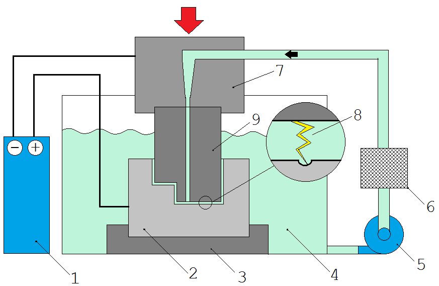
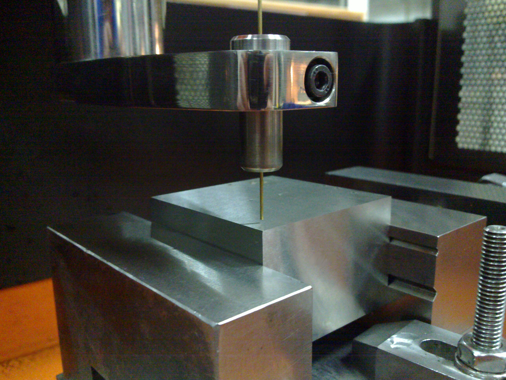

1. Die drei grossen Stufen des Fertigungszyklus
Jedes Uhrenbauteil folgt chronologisch einer strengen Transformationssequenz, vom Rohmetall bis zur vollendeten Haute-Horlogerie-Ausführung:
- 1. Rohling (Primäre Formgebung):
- Walzen: Reduzierung der Metalldicke in kalibrierte Bänder.
- Tiefziehen / Prägen: Plastische Verformung unter der Presse.
- Stanzen / Schneiden: Ursprüngliches Ausschneiden der Rohformen.
- 2. Dimensionelle Fertigstellung (Präzisionsbearbeitung):
- Drehen & Fräsen: In konventioneller Methode oder auf mehrachsigen CNC-Bearbeitungszentren.
- Erodieren (Funkenerosion): Schneiden per elektrischem Draht für enge Profile und gehärtete Stähle.
- Sintern: Verdichten und Brennen von Metallpulvern für dichte Legierungen.
- 3. Funktionelle & Ästhetische Fertigstellung (Vollendung & Dekoration):
- Funktionelle / Schutzbehandlungen: Vakuumabscheidungen PVD, elektrolytische Abscheidungen Galvano (Vergolden, Rhodinieren).
- Dekorationen & Ästhetischer Mehrwert: Polieren (Spiegelglanz), linearer/kreisförmiger Schliff, Trowalisieren (Entgraten in der Gleitschliffwanne), Handangeln, Perlage (Flächenperlieren), thermisches Bläuen per Flamme, Sonnenschliff und Schneckenmuster (Colimaçonnage).
🔬 Verfahren für feinstte Teile & komplexe Geometrien:
Für mikromechanische Geometrien, die mit herkömmlichen Schneidverfahren nicht zu erreichen sind, nutzt die moderne Uhrmacherei die technologische Triade: LiGA (für perfektes galvanisches Wachstum), Silizium (geätzt per DRIE-Plasma) und Präzisionssintern (zur Massenkonzentration).
📷 ORIGINALER HANDSCHRIFTLICHER ZETTEL (01-28) — Erinnerung an Fertigungsphasen & Finissagen
2. Technologievergleich: Fräsen, Erodieren & LiGA
Vergleichende Analyse der geometrischen Eignung und Kanteneinschränkungen je nach gewählten Schneidverfahren:
| Merkmal |
Fräsen (CNC / Konventionell) |
Drahterodieren |
LiGA-Technologie (Mimetal™) |
| Geometrie innerer Ecken |
Abgerundete Ecken (vorgegeben durch Fräserdurchmesser, z. B. Radius ≥ 0.25 mm) |
Beinahe scharfe Ecken (begrenzt durch den Drahtradius, Ømin ≈ 0.05 mm) |
Perfekt scharfe Ecken (fotonische Definition ohne Einschränkung durch rotierende Werkzeuge) |
| Bearbeitbare Materialstärke |
Bis zu 1.5 mm und mehr |
Ca. 1.0 mm |
0.5 mm pro Ebene (in F&E stapelbar) |
| Bearbeitete Materialien |
Messing, Neusilber, ungehärtete Stähle |
Gehärtete Stähle, sehr harte leitfähige Metalle |
Reines Nickel, Nickel-Phosphor (NiP) |
| Hauptvorteile |
Schnelles, wirtschaftliches und bewährtes Verfahren |
Schneiden extrem harter Metalle ohne Verformung |
Volle 2D/3D-Designfreiheit, gratfrei |
📷 ORIGINALER HANDSCHRIFTLICHER ZETTEL (01-30) — Vergleich Fräsen / Erodieren / LiGA & Spezialbearbeitungen
3. Drahterodieren (Wire EDM) & Spezifische Schnitte
1. Prinzip und Funktionsweise der Funkenerosion
Die Funkenerosion ist ein mechanisch berührungsloses Schneidverfahren, das elektrische Hochfrequenz-Funken nutzt, um das Material abzutragen und zu sägen.

Prinzipschema: Generator, isolierendes Dielektrikum, Elektrode (Draht) und Erosionsfunke.

Die Maschine in Aktion: Der stromführende Draht schneidet einen Hartmetallblock.
- Die Kinematik: Der unter Spannung stehende Fühlerdraht (meist aus Messing, Durchmesser 0.05 mm bis 0.40 mm) erzeugt einen kontinuierlichen Lichtbogen mit dem Werkstück. Das Ganze ist in ein dielektrisches Fluid eingetaucht, das den Funken kanalisiert und die mikroskopischen geschmolzenen Metallpartikel sofort abtransportiert.
- Schlüsselanwendung: Schneiden von Flachteilen mit komplexen Konturen in extrem harten Materialien, insbesondere gehärtetem Stahl. Dadurch kann das Werkstück nach dem Härten bearbeitet werden, wodurch alle thermischen Verformungen nach der Bearbeitung vermieden werden.
- Die geometrische Einschränkung (Der Drahtradius): Dies ist eine fundamentale technische Grenze. Der Schneiddraht hat, selbst wenn er nur wenige Mikrometer dick ist, immer einen runden (zylindrischen) Querschnitt. Folglich ist es physikalisch unmöglich, mit dieser Methode perfekt scharfe (spitze) Innenecken zu bearbeiten. Der Innenschnitt behält immer den mikroskopischen Radius des Drahtes bei.
📷 ORIGINALER HANDSCHRIFTLICHER ZETTEL (01-29) — Werkstattschema Drahterodieren & Sintern
2. Weitere spezifische Schnitte in der Uhrmacherei
- Wasserstrahlschneiden:
- Verwendet Wasser unter sehr hohem Druck, versetzt mit Abrasivmitteln.
- (+) Hauptvorteil: Völlige Abwesenheit thermischer Erwärmung (verändert weder die Struktur des Metalls noch empfindliche Materialien wie Perlmutt, Holz, Kunststoff oder Emaille).
- (-) Einschränkungen: Das Werkstück muss fest eingespannt werden; die Restspannung beansprucht das Material.
- Laserschneiden:
- Wird zum Durchbrechen (Ajourieren) von Komponenten und für sehr feine Dekorschnitte verwendet.
- (+) Vorteil: Keine direkte mechanische Krafteinwirkung auf das Bauteil.
- (-) Nachteil: Lokale Wärmeentwicklung an den Schnittkanten, wodurch Mikrograte entstehen können.
4. Die Revolution der UV-LiGA-Technologie (Mimotec™ / Mimetal™)
Deutsches Akronym: Lithographie, Galvanoformung und Abformung. Diese Technologie bietet eine nahezu vollständige Designfreiheit in der horizontalen X-Y-Ebene und ermöglicht extreme Formfaktoren mit perfekt geraden und glatten Wänden.
- Das Mimetal™-Verfahren Schritt für Schritt:
- Lithographie: Ein fotoempfindlicher Lack wird auf ein leitfähiges Substrat aufgebracht und dann durch eine hochpräzise optische Maske mit UV-Licht belichtet.
- Entwicklung: Der Lack wird chemisch entwickelt, um den Negativabdruck des Teils zu erhalten.
- Galvanoformung: Der Hohlraum wird durch metallische Galvanoformung (galvanisches Wachstum von reinem Nickel oder Nickel-Phosphor NiP) ausgefüllt.
- Freisetzung: Das Teil wird von seinem Substrat abgelöst und auf seine präzise Enddicke geläppt.
Praktische Anwendungen und neue Funktionen
Das Fehlen von Einschränkungen durch herkömmliche Schneidwerkzeuge ermöglicht es, neue mechanische Funktionen direkt in die Masse des Bauteils zu integrieren.
- Integrierter Spielausgleich: Die LiGA-Technologie ermöglicht die Herstellung von Zahnrädern mit geschlitzten Zähnen, die ihre eigene Blattfeder integrieren, um jedes Flankenspiel zu eliminieren (lebenswichtig in Anzeigemechanismen oder Chronographen).
- Extremes Skeletonisieren: Hemmungsräder können mit stark durchbrochenen Stegen entworfen werden, wodurch Masse und dynamische Trägheit des Bauteils drastisch reduziert werden, ohne seine Steifigkeit zu beeinträchtigen.
- Mikromarkierungen: Die fotografische Präzision der UV-Maske ermöglicht es, erhabene oder vertiefte Texte (wie die Wochentaginitialen auf einer Kalenderkurve) direkt beim Wachstum des Teils zu integrieren.
5. Pulvermetallurgie & Sintern (Schwere Legierungen RECONIT®)
Das Sintern ermöglicht die Herstellung gebrauchsfertiger Teile mit komplexen Formen ohne Materialverlust:
- Sinterzyklus:
- Mischen: Auswahl legierter Metallpulver mit einem Schmiermittelbinder.
- Komppaktieren: Verdichten in einer Form unter sehr hohem Druck, um eine homogene Dichte zu verleihen.
- Thermisch Sintern: Erhitzen in einem Ofen unter Vakuum oder Schutzgas bei einer Temperatur unter dem Schmelzpunkt, was Mikro-Partikelverschweißungen durch Atomdiffusion auslöst.
- Schlüsselanwendung — Schwermetall RECONIT® (Dichte 16.0 bis 18.1 g/cm³):
- Dichte Legierung auf Wolfram-Basis, ideal für Schwungmassen von Automatikuhren, Gegengewichte und Gyroskope, um die Aufzugsleistung in einem begrenzten Volumen zu maximieren.
- Wesentliche Werkstattunterscheidung:
• Schweres Wolfram: Schwungmassen und Aufzugsrotoren.
• Wolframkarbid (Hartmetall): Schneidwerkzeuge und Fräser.
6. Herstellung von Uhrenrubinen (Industrielles Verfahren La Pierrette)
Die Verwandlung von synthetischem Korundrohlings in Uhrensteine erfordert eine mikrometergenaue Bearbeitung, um perfekte Reibungskoeffizienten zu garantieren. Die klassische Produktionskette folgt vier Hauptschritten:
- 1. Vorbereitung:
Sägen (Schneiden der Korundkugel in Plättchen) ➔ Bündeln (Einfassen in regelmäßige Stäbe) ➔ Drehen (äußeres Zylinderschleifen der Rohlinge).
- 2. Bohren:
Herstellung des zentralen Kanals per Präzisionslaser oder Diamantspindel.
- 3. Einfädeln & Kalibrieren:
Grobschleifen (Kalibrieren des Lochs auf Diamantdraht) ➔ Drehen (Außendurchmesser schleifen) ➔ Aushöhlen (Bearbeitung der Ölenkehle / Ölreserve) ➔ Olivieren (Bombieren des Lochs zur Reduzierung der Zapfenreibung: Übergang von geradem Loch zu oliviertem Loch).
- 4. Finish:
Spiegelpolieren der Flächen und des Lochs ➔ Visieren (optische Einzelprüfung unter dem Mikroskop) ➔ Verpacken in versiegelten Kapseln.
7. Funktionelle & Ästhetische Finissagen in der Haute Horlogerie
Uhrmacherische Finissagen veredeln mechanische Teile durch Beseitigung von Graten, Schutz vor Oxidation und Erzeugung außergewöhnlicher Lichtspiele.
1. Grundlegende funktionelle Finissagen
- Trowalisieren®: Entgraten und Veredeln in einer Gleitschliffwanne mit Wasser, Reinigungslösung und Abrasivkörpern (Keramik-Chips oder BeCu). Beseitigt scharfe Kanten und Bearbeitungsspuren ohne Beeinträchtigung der Planarität.
- Sandstrahlen: Einheitliche matte Oberfläche durch Druckbeaufschlagung mit Mikro-Abrasivpulvern (weit verbreitet bei Industrie-Kalibern wie ETA 2824).
2. High-End-Finissagen auf Brücken, Platinen & Räderwerken
- Handangeln & Innenecken:
- Unter 45° geneigte Phase (flach oder leicht gewölbt/gerundet), spiegelblank poliert ohne restliche Kratzer.
- Zeichen der Exzellenz: Scharfe Innenecken können nicht maschinell hergestellt werden und sind das exklusive Privileg der Handarbeit mit Feile und Diamantine-bestrichenem Holzspieß.
- Senkungen (Lichtschächte): Bearbeitung und Spiegelpolieren der Vertiefungen zur Aufnahme von Schraubenköpfen und Rubinsteinen mithilfe eines Kugelfräsers oder Buchsbaumspießes.
- Dekorative Oberflächenbearbeitungen der Oberseite:
- Gerade Schliff-Striche (Traits tirés): Perfekt parallele satinierte Linien, erzielt mit Schleifpapier oder Feinstaubstein.
- Perlage (Bouchonnage): Regelmäßige, sich zur Hälfte überlappende kreisrunde Muster, ausgeführt mit Schleifstäben in linearer oder konzentrischer Bewegung.
- Genfer Streifen (Côtes de Genève): Regelmäßige Streifen in satinierten Wellen, erstellt mit einer Steinscheibe auf der Drehbank oder CNC.
- Gravuren & Oberflächenbehandlungen:
- Körnung (Grenage): Fein gehämmertes, glänzendes Aussehen durch Bearbeitung mit der Rundbürste und Drahtbürste (Oberflächenverfestigung).
- Gravur: Von Hand (Stichel), durch chemischen Angriff (Säure) oder per Laser ausgeführt, um das Manufakturogo oder Seriennummern anzubringen.
- Galvanischer Schutz: Elektrolytische Bäder zum Aufbringen von Gold-, Rhodium- oder Rutheniumschichten zum Schutz des Messings vor Oxidation und zur Verschönerung des Teils.
3. Stahltile, Räder & Thermisches Bläuen von Schrauben
8. Herstellung von Silizium-Uhrenteilen
Silizium (Symbol Si) ist ein Halbmetall, das etwa 25% der Masse der Erdkruste ausmacht (vorhanden als Kieselsäure SiO₂). In der Haute Horlogerie wird es in seiner monokristallinen Form wegen seiner antimagnetischen und hervorragenden tribologischen Eigenschaften eingesetzt.
1. Vom Silizium-Ingot zum Spiegel-Wafer
- Wachstum des Ingot: Schmelzen von Silizium bei 1450°C in einem Tiegel (Czochralski-Verfahren), gefolgt von einem langsamen Ziehen aus einem monokristallinen Impfkristall, um einen homogenen zylindrischen Block zu bilden.
- Herstellung der Wafer:
- Zuschneiden des Ingots auf den gewünschten Durchmesser, gefolgt vom Trennen in ultrasdünne Scheiben (Wafer) durch Mehrfachtraht-Sägen.
- Umfangsschleifen mit Diamantwerkzeugen für eine strenge dimensionsmäßige Kalibrierung.
- Doppelseitiges mechanisches und chemisches Polieren zur Beseitigung von Sägespuren.
- Wärmebehandlung im Diffusionsofen zur Beseitigung interner Verunreinigungen.
- Finales Spiegelpolieren: Die erzielte Oberflächenebenheit erreicht eine Toleranz von weniger als 3 µm auf einem Wafer von 300 mm Durchmesser.
2. Tiefen-Plasmaätzen (DRIE - Bosch-Verfahren)
Die Formgebung von Spiralen, Ankern und Hemmungsrädern erfolgt auf atomarer Ebene:
- 1. Fotolithographie: Aufbringen eines fotoempfindlichen Lacks auf den Wafer, gefolgt von UV-Bestrahlung durch eine Fotomaske, die die Uhrenkomponenten abbildet.
- 2. Entwicklung: Chemische Beseitigung des nicht belichteten Lacks zur Freilegung der zu ätzenden Bereiche.
- 3. DRIE-Ätzen (Deep Reactive Ion Etching): Der Wafer wird in eine Vakuumkammer gegeben, in der ein ionisiertes Gas (Plasma, 4. Aggregatzustand) das Material per elektrischem Feld bombardiert und perfekte vertikale Wände mit nanometrischer Präzision ausfräst.
- 4. Freigabe: Auflösung der Stoppschicht und des Schutzlacks zur Freigabe der fertigen, einbaufertigen Teile.
3. Oberflächenbehandlungen & Finissagen auf Silizium
- Oberflächenoxidation (SiO₂): Erzeugt eine Schutzschicht kalibrierter Dicke (0.5 µm violett, 1.55 µm blaugrau), die den thermoelastischen Koeffizienten (Isochronismus der Spirale) und die mechanische Festigkeit optimiert.
- Nanokristalline Diamantbeschichtung: Ultraharte Beschichtung zur Reduzierung der Reibung auf ein absolutes Minimum ohne Flüssigschmierung.
- Laterale Strukturierung & Holografische Ätzung: Optimierung der Kontaktflächen zwischen Anker und Rad sowie fälschungssichere dekorative Personalisierung.